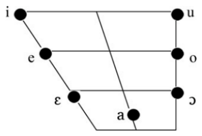
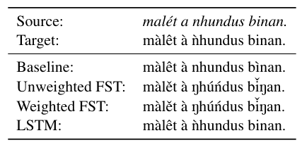
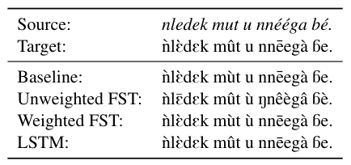
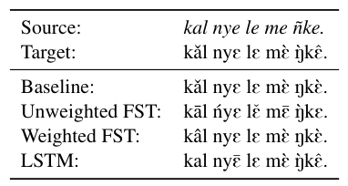

RAIL 2023Traduction automatique
Comparaison des méthodes de conversion orthographique pour le Bàsàá, une langue du Cameroun
Traduction automatique, non relue par un humain. L'article original est la version de référence ; les phrases soulignées sont celles dont les contrôles automatiques n'étaient pas sûrs.
Proceedings of the Fourth workshop on Resources for African Indigenous Languages (RAIL 2023).
Traduction par Ernst van Gassen (Arktos AI Lab), sous licence CC BY 4.0 comme l'original. Réutilisation permise, y compris commerciale, avec attribution. Les auteurs originaux n'ont pas relu ni approuvé cette traduction.
Texte brut réutilisable, avec sa licence : Français · LICENCE
Affiliations
Alexandra O’Neil, Daniel Swanson
Emmanuel Ngué Um
Robert Pugh, Francis Tyers
University of Yaoundé
Indiana University
Yaoundé, Cameroon
Bloomington, IN USA
Résumé
La standardisation orthographique est une étape importante dans la documentation d'une langue et le développement de ses ressources. Cependant, les textes écrits dans les anciennes orthographes restent pertinents pour l'histoire et le développement de la langue et doivent donc être convertis à l'orthographe standardisée. S'assurer qu'une langue a accès à la version orthographiquement standardisée de tous ses textes enregistrés est important pour le développement des ressources, car cela fournit des ressources textuelles supplémentaires pour l'entraînement, soutient la contribution des auteurs utilisant d'anciens systèmes d'écriture, et fournit des informations sur le développement de la langue. Cet article évalue la performance des méthodes de traitement automatique des langues, en particulier les transducteurs à états finis et les réseaux Long Short-term Memory, pour la conversion orthographique de textes en bàsàá de l'orthographe missionnaire protestante vers l'orthographe AGLC désormais standard, avec la conclusion que les LSTM sont quelque peu plus efficaces en l'absence d'informations lexicales explicites.
1 Introduction
La standardisation orthographique est un processus que de nombreuses langues du monde ont subi au cours de l'histoire et beaucoup sont encore en cours. Bien qu'il y ait de nombreux avantages à la standardisation du système d'écriture d'une langue, elle peut aussi présenter des défis pour les communautés linguistiques. Ces défis incluent la contestation entre les locuteurs qui sont habitués à utiliser différentes représentations, l’inconfort des locuteurs qui se rapportent à leur langue uniquement comme une langue orale, la prise en compte et l’atténuation de l’impact du colonialisme sur la langue et la communauté, le débat sur la meilleure façon de représenter les sons dans la langue et l’hésitation à adopter le système d’écriture par tous les locuteurs (Limerick, 2018).
Comme référencé dans l'ensemble de défis potentiels ci-dessus, les communautés ont souvent des moyens différents de représenter leur langue avant l'effort coordonné pour mettre en œuvre un système uniforme (Mosel, 2004). Alors que l'un des objectifs de la normalisation orthographique est de créer un support cohérent que les locuteurs peuvent utiliser pour se comprendre les uns les autres et communiquer leurs propres pensées, les textes et les données écrites dans les orthographes anciennement utilisées restent pertinentes à la fois dans l'histoire et le développement de la langue. Pour préserver cette information, il est nécessaire de convertir les anciennes orthographes au nouveau standard. En outre, il est préférable de commencer ce processus peu de temps après la normalisation du système, car cela augmente les possibilités de travailler avec des locuteurs qui connaissent bien les systèmes précédemment utilisés.
En outre, la conversion d'anciennes orthographes dans la norme actuelle est bénéfique car certains orateurs peuvent ne pas être disposés à passer à la nouvelle norme. Pendant un certain temps après l'adoption de la nouvelle orthographe, les locuteurs peuvent continuer d'utiliser une variété d'orthographes dans leur propre écriture, suivant l'orthographe qu'ils ont précédemment apprise (Jahani, 1989). Certains locuteurs peuvent être obligés de continuer à utiliser un système non standard en raison d'un attachement émotionnel à un système orthographique. Par exemple, les raisons de maintenir une préférence orthographique vont d'une expérience positive, comme associer un système à la manière dont ses grands-parents lui ont appris, à une réaction à une expérience traumatisante, comme des environnements scolaires psychologiquement et physiquement abusifs où un système d'écriture était mis en avant (Arndt, 2019). Peu importe la raison pour laquelle un locuteur continue d'utiliser une orthographe différente, il est constructif pour la communauté de s'assurer que les utilisateurs de la nouvelle orthographe sont encore capables de comprendre les écrits dans d'autres orthographies et de développer une méthode pour convertir facilement ces textes (Person, 2009).
Dans cet article, nous étudions et comparons l'utilité des transducteurs à états finis (FSTs) et des réseaux de neurones à mémoire à long terme (LSTMs) pour la tâche de conversion d'une orthographe antérieure de la langue Bàsàá à la norme actuelle, avec la conclusion que les LSTMs surpassent légèrement les FSTs en l'absence d'informations lexicales.
2 Bàsàá
Le bàsàá est une langue bantoue parlée par environ 300 000 locuteurs au Cameroun (Eberhard et al., 2022). Bien qu'elle présente de nombreuses caractéristiques typiques d'une langue bantoue, elle est généralement perçue comme ayant une plus grande variation et flexibilité dans la structure des syllabes et les classes nominales par rapport aux autres langues bantoues, comme discuté dans la section 2.1. L'histoire du Bàsàá rend également compte d'une variété de systèmes d'écriture provenant de différents missionnaires et de différents efforts de standardisation, comme décrit dans la section 2.2.

Figure 1 : Carte représentant les principales régions où le Bàsàá est parlé : le sud, le centre et le littoral du Cameroun. (Njock, 2019)
2.1 Profil linguistique
Un inventaire phonétique du bàsàá est présenté dans Makasso et Lee (2015), qui comprend 7 voyelles phonémiques (voir Figure 2) avec des contrastes courts-longs et 30 consonnes (voir Figure 3). De plus, le Bàsàá utilise un système de tons haut-bas. Bien qu'il s'agisse d'une langue bantoue, elle autorise de manière atypique une structure de syllabe fermée en plus de la structure de syllabe ouverte. Bien qu'elle possède un système de classes nominales, les distinctions de surface entre les classes sont parfois neutralisées. Les noms ne sont pas obligés de commencer par une attaque consonantique et les verbes ne sont pas obligés de se terminer par une voyelle. Ces facteurs entraînent une plus grande diversité de structures syllabiques permises en Bàsàá par rapport aux autres langues bantoues (Hyman, 2003).

Figure 2: Inventaire des voyelles en Bàsàá (Makasso et Lee, 2015) [ɛ] et [ɔ] sont contrastées avec [o] et [e] par des signes diacritiques dans les orthographes missionnaires
2.2 Histoire orthographique
L'histoire orthographique du Bàsàá contient plusieurs systèmes d'écriture, car les coloniaux anglais, allemands et français qui ont transcrit la langue ont choisi différentes méthodes de représentation. Les alphabets créés pour le bàsàá, et pour de nombreuses langues du Cameroun, ont été principalement influencés par les langues maternelles des transcripteurs, généralement le français, l'anglais ou l'allemand, et ont souvent omis de marquer correctement des contrastes importants dans la langue (Bird, 2001). Les deux orthographes les plus importantes établies avant l'actuelle sont attribuées à des missionnaires protestants et catholiques et sont appelées dans cet article orthographes protestante et catholique, aucune d'entre elles n'ayant de ton marqué.
Alors que la première tentative de mise en œuvre d'un système d'écriture standard, utilisant une orthographe développée pour les langues ouest-africaines à Bamako (Organisation des Nations Unies pour l'éducation, la science et la culture, 1966), n'a pas été couronnée de succès, un comité national a été mis en place pour développer un système d'écriture qui faciliterait une alphabétisation pan-camerounaise dans toutes les langues du pays. Au centre de cette entreprise était la mise en place d'un système qui pourrait capturer tous les sons contrastés à travers les langues camerounaises. L'inclusion de tous les contrastes permettrait à tout locuteur alphabétisé d'une langue camerounaise de lire et de prononcer les mots d'un texte dans n'importe laquelle des langues du Cameroun, indépendamment de la compréhension (Hartell, 1993).
L'effort national a abouti à l'établissement de l'Alphabet Général des Langues du Cameroun (AGLC) par le Comité National pour l'Unification et l'Harmonisation des Alphabets des Langues du Cameroun en 1979 (Maurice Tadadjeu, 1979). Les caractères de cet alphabet sont principalement latins, et donc similaires aux alphabets anglais, allemand et français, cependant l'alphabet intègre des symboles de l'Alphabet Phonétique International pour représenter pleinement l'inventaire phonétique des langues camerounaises. Les symboles de l'AGLC complet sont listés dans le Tableau 1.

Figure 3 : Inventaire des consonnes en Bàsàá (Makasso et Lee, 2015).

Tableau 1: Alphabet des langues camerounaises. L'alphabet AGLC a été conçu pour fonctionner comme un alphabet unificateur et intelligible pour les locuteurs de toutes les langues camerounaises.
Bàsàá utilise un sous-ensemble de ce système en accord avec les contrastes phonétiques de la langue. Les lettres latines sont utilisées aux côtés de ɓ, ŋ, ɛ et ɔ avec des accents aigus, graves et circonflexes pour indiquer le ton. Bien que cette orthographe soit soutenue par l'Académie des langues du Cameroun, les anciennes orthographes missionnaires sont encore utilisées par certains locuteurs et sont généralement utilisées dans les textes antérieurs écrits en Bàsàá, nécessitant une méthode de conversion des orthographes missionnaires au standard AGLC.
En comparant les trois systèmes d'écriture, la première différence majeure se trouve dans le marquage des tons et des voyelles. Les systèmes d'écriture protestants et catholiques ne marquent pas les tons, mais utilisent plutôt des accents aigus, graves et circonflexes pour marquer différentes voyelles. Le système protestant représente [e] en utilisant un accent aigu, é, tandis qu'un [ɛ] est représenté par un e simple. De même, le système protestant utilise le ô circonflexe, pour marquer [o], mais un o simple dans l'orthographe représente [ɔ]. D'autre part, l'orthographe catholique marque [ɛ] et [ɔ] par è et ò, tandis que les simples e et o représentent [e] et [o]. Cependant, dans l'orthographe AGLC, les accents aigu, grave et circonflexe sont utilisés pour représenter le ton et les ɛ et ɔ sont déjà contrastés dans l'orthographe par l'ajout des symboles ɛ et ɔ. Le ton est également marqué sur les consonnes nasales syllabiques dans le système AGLC.
Les consonnes dans l'orthographe nécessitent également une considération dans le processus de conversion. Les sons [ɓ] et [ŋ] sont représentés par b et ñ dans les orthographes missionnaires, tandis que l'orthographe AGLC distingue [b] de [ɓ] avec les caractères b et ɓ. Au lieu de ñ, le [ŋ] est représenté par ŋ dans l'orthographe AGLC. En plus de ces consonnes, les orthographes missonnaires transcrivent le son t en tj, le système AGLC utilise c. Une phrase est présentée dans les trois orthographes ci-dessous pour illustrer certaines des différences entre les orthographes.
AGLC: Mɛ̀ yè lɛ mɛ ɓɔl nyɔɔ̄ nì màkòò.
Protestant: Me yé le me bol nyoo ni makôô.
Catholic: Mè ye lè mè bòl nyòò ni makoo.
3 Travaux antérieurs
La négociation entre les orthographes est un problème courant dans de nombreuses langues, et à ce titre, un certain nombre d'études précédentes ont exploré des techniques pour aider à la conversion et/ou à la normalisation orthographique. Ce travail s'appuie sur des recherches existantes décrivant la langue Bàsàá et l'utilisation du traitement du langage naturel pour les langues à faibles ressources. Cette section présente les travaux existants sur le Bàsàá dans la section 3.1, les transducteurs à états finis (FST) dans la section 3.2, et les réseaux Long Short-term Memory (LSTM) dans la section 3.3. Bien que la recherche concernant les FST et les réseaux LSTM en contexte peu doté soit vaste, cette section se concentre sur des exemples qui reflètent étroitement les objectifs de cet article.
3.1 Recherche sur le Bàsàá
Les travaux existants sur le Bàsàá ont profilé l'inventaire linguistique de la langue (Makasso et Lee, 2015; Hyman, 2003), généré des dictionnaires (Lemb et de Gastines, 1973), conçu du matériel d'apprentissage (Moreton et al., 1968) et, plus récemment, facilité le développement de ressources qui intègrent des méthodes computationnelles et de TAL avec le Bàsàá pour améliorer les ressources disponibles pour la documentation, comme le corpus oral bilingue développé pour aider à la transcription phonétique automatique (Hamlaoui et al., 2018).
Nikitin et al. (2022) aborde la tâche de conversion d'orthographe en Bàsàá en utilisant Bidirectional Encoder Representations from Transformers (BERT), qui fonctionne souvent bien en raison de la grande quantité de ressources et d'entraînement qui a été consacrée au modèle. Cependant, pour cette tâche, BERT n'a pu surpasser le modèle de base qu'après un prétraitement approfondi du texte. L'importance du pré-traitement extensif du texte et les performances légèrement meilleures que la ligne de base suggèrent que BERT n'est pas bien adapté à cette tâche.
3.2 Transducteurs à états finis
Les transducteurs à états finis (FST) fonctionnent comme un traducteur entre un ensemble de chaînes d'entrée et un ensemble de chaînes de sortie. Dans le cas des langues, la chaîne d'entrée peut utiliser des règles linguistiques et produire une sortie qui respecte ces règles. Comme l'entrée du FST repose sur des règles linguistiques, le modèle fonctionne souvent bien dans des environnements à faibles ressources, car les modèles ne reposent pas sur de grandes quantités de données d'entraînement ou de ressources de calcul. Alors que les modèles FST nécessitent un certain nombre d'efforts linguistiques ou informatiques à construire, divers outils ont été créés qui automatisent diverses parties du processus pour aider à atténuer ces limites (Khanna et al., 2021), bien que les performances des modèles FST bénéficient grandement de la génération de règles détaillées et spécifiques à la langue.
En général, les FST ne spécifient pas nécessairement un mappage unique entre les chaînes d'entrée et de sortie, ce qui peut causer des problèmes pour des tâches comme la conversion orthographique qui nécessitent généralement une seule sortie. Cela peut être résolu en ajoutant des règles supplémentaires pour contraindre le transducteur. Toutefois, si la détermination de règles appropriées est difficile et qu'un corpus est disponible, on peut également y remédier en ajoutant des poids, qui sont des scores pouvant être appliqués soit à une paire entrée-sortie de mots entiers, soit à une cartographie de sous-mots. Ensuite, pour une entrée donnée, chaque sortie a un poids égal à la somme de tous les poids applicables dérivés du corpus, seule la forme avec le total le plus bas étant sortie.
Les FST ont été implémentés dans de nombreux contextes peu dotés, ainsi que pour l'application de conversion orthographique, de translittération et de normalisation de texte. Washington et al. (2021) ont développé un transducteur pour aider à la conversion orthographique et à l'analyse morphologique de Zapotec et ont constaté que même un transducteur incomplet pouvait donner des résultats positifs. Des efforts similaires utilisent un FST pour développer un générateur et un analyseur morphologiques tout en abordant simultanément le problème des diacritiques manquants (Alkhairy et al., 2020), démontrant la facilité d'expansion d'un FST pour créer plus de ressources pour une langue. Manohar et al. (2022) étendent l'utilisation des FST aux applications de synthèse vocale de texte (TTS) en contexte peu doté, en générant un modèle qui convertit entre les phonèmes et les graphèmes du malayalam.
Bien que l'utilisation des FST dans les contextes peu dotés soit bien attestée, l'inclusion des tons s'est avérée difficile. Ngué Um et al. (2022) ont construit un FST pour l’ewondo, une langue camerounaise. Dans cette étude, la nature ambiguë des marques de tons combinées par rapport aux tons combinants pose des difficultés pour l'analyseur. Bien que les accents combinés et combinants puissent être analysés par le FST, cela entraîne des erreurs dans la génération morphologique. Un élargissement de la TSF pour Bàsàá devrait également aborder cette question.
3.3 Réseaux de mémoire longue à court terme
La LSTM est une architecture de réseau neuronal récurrent qui permet d'incorporer des informations sur les dépendances à long terme, fournissant un contexte supplémentaire pour la génération de la sortie. Les réseaux LSTM ont été appliqués à de nombreuses tâches d'apprentissage profond, telles que la traduction automatique, la reconnaissance optique de caractères (OCR) et la reconnaissance automatique de la parole.
Les LSTM ont été combinés avec des tâches OCR pour aider les langues à la numérisation et à la normalisation orthographique des textes historiques. Azawi et al. (2013) ont constaté que les LSTMs fonctionnent bien pour la conversion de textes historiques allemands, car elles sont capables de gérer des exemples non vus. De même, Simistira et al. (2015) ont constaté que l'utilisation de LSTM pour l'OCR produit un taux d'erreur de caractère inférieur aux principales méthodes d'OCR pour l'écriture polytonique grecque.
En outre, les LSTM ont récemment gagné en popularité pour leur utilité dans les tâches TTS, telles que la conversion graphème-phonème. Adriana (2019), Liu et al. (2018) et Behbahani et al. (2016) ont mis en œuvre avec succès des modèles LSTM pour la conversion grapheme-à-phonème en roumain, mongol et persan.
4 Méthodologie
Cet article compare l'exactitude d'un transducteur à états finis (FST), d'un FST pondéré et d'un modèle de mémoire à long court terme (LSTM) pour la tâche de conversion orthographique du Bàsàá. La section 4.1 décrit les données sur lesquelles les modèles ont été entraînés, la section 4.2 décrit la mesure de référence simple utilisée pour la comparaison, la section 4.3 explique l'utilisation d'un FST non pondéré, la section 4.4 détaille l'implémentation du FST pondéré et la section 4.5 décrit le modèle LSTM.
4.1 Données
Les méthodes de cette étude utilisent un corpus de textes composé de 12 000 phrases dans l'orthographe protestante ainsi que des translittérations dans l'orthographe AGLC. Parmi ces phrases, 10 000 sont utilisées pour l'entraînement, 1 000 pour la validation et 1 000 pour le test. Le prétraitement du texte consistait à mettre les caractères en minuscules.
4.2 Ligne de base
La baseline recherche dans les phrases cibles la traduction la plus fréquente d'un mot source et remplace le mot source par ce jeton. Dans le cas où le mot source n'apparaît pas dans les données, le mot source est sorti sous sa forme originale sans conversion. La ligne de base ici est une approche naïve du problème, mais est représentative du manque actuel de travaux existants sur la conversion orthographique dans la langue.
4.3 TSF non pondérée
Le FST non pondéré consiste en un ensemble de mappages de caractères compilés à l'aide du compilateur de lexique Lexd (Swanson et Howell, 2021) qui inclut chaque paire de caractères source et cible trouvés dans les données d'entraînement. Le mappage de chaque caractère individuellement et sans contexte crée un grand nombre de formes de sortie, que nous résolvons en sélectionnant une seule forme de sortie au hasard. De plus, nous avons ajouté quatre règles qui restreignent la sortie dans les cas où le contexte phonologique est non ambigu. Spécifiquement, que les nasales n'auront jamais un ton diacritique dans l'orthographe AGLC si elles précèdent une voyelle (ce sont 3 règles, une pour chacun m, n et ), et que là où l'orthographe missionnaire a tj l'orthographe AGLC aura toujours c (par opposition à convertir le t et le j séparément comme tj).
4.4 TSF pondérée
Là où le FST non pondéré traite chaque correspondance comme également probable, le FST pondéré attribue un poids à chaque chemin qui a été observé dans les données d'entraînement, les paires source-cible plus fréquentes recevant des poids plus faibles (meilleurs). Ensuite, plutôt que de sélectionner au hasard, la sortie avec le poids le plus bas est utilisée.
4.5 Modèle neural seq2seq
Suite à des travaux antérieurs qui ont montré que les architectures neuronales seq2seq basées sur les caractères fonctionnent bien pour la normalisation et la conversion orthographiques (Rosca et Breuel, 2016; Orife, 2018), nous avons entraîné un modèle encodeur-décodeur avec attention globale (Luong et al., 2015) pour convertir les orthographes missionnaires en orthographe AGLC. L'encodeur et le décodeur sont tous deux des réseaux unidirectionnels à mémoire à long et court terme (Hochreiter et Schmidhuber, 1997) composés de 2 couches de 1 000 unités cachées chacune. Nous avons utilisé la bibliothèque OpenNMTpy (Klein et al., 2020) pour entraîner le modèle et générer des prédictions sur les ensembles de données présentés.
5 Résultats
Nous comparons les quatre systèmes en utilisant les taux d'erreur de mot et de caractère (WER et CER). WER et CER sont calculés automatiquement en comparant les sorties de chacun des systèmes à la sortie du fichier cible. Suite à la présentation de WER et CER pour chacun des systèmes, nous fournissons des exemples des résultats de chaque modèle. Des informations sur les différences de représentation orthographique des textes source et cible se trouvent dans la section 2.2.
5.1 Taux d'erreur de mots et de caractères
Les résultats de tous les systèmes, à l'exception du FST non pondéré, étaient relativement similaires, le modèle de référence étant plus performant que les deux systèmes FST et égal au modèle seq2seq. Le modèle seq2seq a obtenu le meilleur taux d'erreur de caractères, tandis que la référence affiche un taux d'erreur de mots légèrement meilleur. Cela peut s'expliquer par le fait que la ligne de base fonctionne au niveau du mot. Ainsi, une erreur entraîne la sélection de la mauvaise forme de mot, qui a probablement plusieurs caractères différents de la forme de mot correcte. Le modèle seq2seq, en revanche, prédit au niveau des caractères et peut ne commettre qu'une seule erreur de caractère dans un mot, comme un diacritique tonal manqué.

Tableau 2: Comparaison entre les 4 modèles.
5.2 Analyse des erreurs
Pour mieux comprendre les performances de ces modèles, nous présentons des exemples de résultats des modèles pour trois phrases différentes et discutons des erreurs communes à chacun des modèles. Les exemples sont tirés de la sortie de l'ensemble de développement pour chacun des modèles.

Tableau 3
Dans les phrases du tableau 3, on observe que les FST ont tendance à surgénérer la lettre ŋ lorsque l'orthographe source contient un n. De plus, il montre que le réseau LSTM réussit à générer le ton d'une nasale syllabique. Bien que la référence puisse souvent prédire le ton sur une nasale syllabique, ce token n'est pas dans les données d'entraînement, donc la référence produit simplement le token d'origine.
Les phrases du tableau 4 montrent que la plupart des systèmes sont capables de comprendre que les accents dans l'orthographe source ne sont pas indicatifs d'un accent sur l'orthographe cible. Cependant, le FST non pondéré tend à ajouter des accents même en l'absence d'accents dans la forme cible. Dans l'ensemble, nous voyons le LSTM bien performer sur le assignm nt de ton et de caractères dans cet exemple, la ligne de base étant presque parfaite en dehors du ton sur le deuxième jeton.

Tableau 4

Tableau 5
Dans les phrases du tableau 5, bien que le LSTM se rapproche, il n'est pas capable d'identifier le ton ascendant dans le premier jeton et marque le ton du deuxième jeton comme étant au milieu. La FST pondérée et la FST non pondérée prédisent correctement les caractères, mais sont très incohérentes avec les diacritiques tonales, bien qu'il soit évident que la FST pondérée surpasse la FST non pondérée.
6 Conclusion
Les résultats de cet article contribuent à la discussion concernant les avantages relatifs des méthodes NLP par rapport à des lignes de base plus simplistes dans des contextes à faibles ressources. Le baseline surpasse les FST non pondérés et pondérés ainsi que le réseau LSTM en ce qui concerne le WER. Comme le Bàsàá est une langue tonale, les changements de ton d'un caractère peuvent créer des paires minimales et ainsi le WER est une métrique plus réaliste pour évaluer l'utilité d'un modèle. Cependant, le baseline se contente de sortir le mot original pour tout token hors vocabulaire (OOV), ce qui signifie que la performance du baseline est fortement impactée par les tokens OOV. Bien que cela ait un impact minimal sur cet ensemble de données, un ensemble de données avec plus de jetons OOV serait moins performant.
Bien que la ligne de base fonctionne bien sur l'orthographe protestante, elle fonctionnerait probablement encore mieux sur l'orthographe catholique car elle utilise des marques d'accent grave au lieu de marques d'accent aigu. Bien que l'orthographe catholique et AGLC utilisent les accents graves pour marquer différentes choses, la présence de marques graves dans la cible est beaucoup plus probable que les marques d'accent aigu, qui n'apparaissent que lors de la déconstruction des tons ascendants et descendants sur les longues voyelles. La méthode de gestion des tokens OOV fonctionnerait donc mieux pour un texte source écrit dans l'orthographe catholique, car la probabilité d'avoir par coïncidence une sortie qui correspond à la forme d'entrée est beaucoup plus élevée lorsque l'orthographe source utilise des accents graves.
Dans cet article, les FST non pondérées et pondérées ont été écrites en utilisant des règles linguistiques très minimales, ce qui se traduit par leurs performances relativement médiocres. Le FST pondéré a grandement réduit l'impact du manque de règles détaillées, mais bénéficierait clairement encore de leur ajout.
Cet article présente une étude préliminaire de l'application des réseaux FST et LSTM au thème de la conversion orthographique. Bien que la ligne de base simpliste fonctionne étonnamment bien pour cet ensemble de données, nous croyons que la performance comparable du réseau FST pondéré et du réseau LSTM est prometteuse et nécessite un développement ultérieur de ces modèles, en particulier l'inclusion de règles linguistiques supplémentaires pour le FST pondéré et l'augmentation des données d'entraînement pour le réseau LSTM.
Limites
Cet article tente de faire des déclarations plus larges sur l'applicabilité des méthodes actuelles de TAL pour la conversion de texte en discutant des résultats de ces modèles sur le Bàsàá. Le cas de Bàsàá est problématique car la représentation des tons est difficile pour de nombreux modèles. Cependant, cette étude bénéficie toujours de l'orthographe alphabétique romaine de la langue et des ressources disponibles pour les langues à orthographe alphabétique latine. De plus, Bàsàá utilise une orthographe transparente qui facilite également les méthodes automatiques de conversion. D'autres résultats et défis sont susceptibles de surgir lors de l'application de ces modèles à une langue qui utilise une orthographe non basée sur le latin, non alphabétique et/ou opaque.
Comme ce projet vise à présenter un point de départ pour des recherches approfondies sur la conversion orthographique, nous avons commencé par fournir une comparaison globale et une brève analyse des erreurs. Toutefois, nous prévoyons mettre en œuvre une analyse plus systématique des erreurs pour orienter les travaux futurs. L'analyse actuelle des erreurs met en évidence certains modèles observés dans les données, mais un examen plus approfondi des résultats aidera à l'élaboration du système actuel pour Bàsàá.
Déclaration éthique
La motivation de ce travail est de comparer les méthodes actuelles de TAL dans un contexte peu doté et de discuter de la manière dont les différents systèmes pourraient s'appliquer dans différents contextes en fonction des résultats, contribuant globalement à la discussion sur la manière dont les méthodes de TAL peuvent être utilisées pour bénéficier aux communautés linguistiques et soutenir la création de davantage de ressources linguistiques. Bien que l'objectif soit de soutenir la communauté linguistique, l'intégration de méthodes computationnelles pose également le risque de marchandisation de la langue et d'une dépossession de la propriété intellectuelle d'une communauté. Cette étude est soumise avec la conviction que les avantages actuels associés à l'application de cette recherche l'emportent sur ce risque.
Remerciements
Cette recherche a été soutenue en partie par Lilly Endowment, Inc., grâce à son soutien pour l'Indiana University Pervasive Technology Institute.
Références
STAN Adriana. 2019. Input encoding for sequence-to-sequence learning of romanian grapheme-to-phoneme conversion. In 2019 International Conference on Speech Technology and Human-Computer Dialogue (SpeD), pages 1-6. IEEE.
Maha Alkhairy, Afshan Jafri, and David A Smith. 2020. Finite state machine pattern-root arabic morphological generator, analyzer and diacritizer. In Proceedings of the Twelfth Language Resources and Evaluation Conference, pages 3834-3841.
Jochen S Arndt. 2019. Engineered zuluness: Language, education, and ethnic identity in south africa, 1835-1990. The Journal of the Middle East and Africa, 10(3):211-235.
Mayce Al Azawi, Muhammad Zeshan Afzal, and Thomas M Breuel. 2013. Normalizing historical orthography for ocr historical documents using lstm. In Proceedings of the 2nd International Workshop on Historical Document Imaging and Processing, pages 80-85.
Yasser Mohseni Behbahani, Bagher Babaali, and Mussa Turdalyuly. 2016. Persian sentences to phoneme sequences conversion based on recurrent neural networks. Open Computer Science, 6(1):219-225.
Steven Bird. 2001. Orthography and identity in cameroon. Written Language & Literacy, 4(2):131-162.
David M. Eberhard, Gary F. Simons, and Charles D. Fennig. 2022. Ethnologue: Languages of the World, twenty-fifth edition. SIL International.
Fatima Hamlaoui, Emmanuel-Moselly Makasso, Markus Müller, Jonas Engelmann, Gilles Adda, Alex Waibel, and Sebastian Stüker. 2018. BUL-Basaa: A bilingual basaa-French speech corpus for the evaluation of language documentation tools. In Proceedings of the Eleventh International Conference on Language Resources and Evaluation (LREC 2018), Miyazaki, Japan. European Language Resources Association (ELRA).
Rhonda L. Hartell. 1993. Alphabets of africa. SIL International.
Sepp Hochreiter and Jürgen Schmidhuber. 1997. Long short-term memory. Neural computation, 9(8):1735-1780.
Larry M Hyman. 2003. Basaá (a43). The Bantu languages, pages 257-282.
Carina Jahani. 1989. Standardization and orthography in the Balochi language. Ph.D. thesis, Acta Universitatis Upsaliensis.
Tanmai Khanna, Jonathan N Washington, Francis M Tyers, Sevilay Bayatlı, Daniel G Swanson, Tommi A Pirinen, Irene Tang, and Hèctor Alòs i Font. 2021. Recent advances in apertium, a free/open-source rule-based machine translation platform for low-resource languages. Machine Translation, 35(4):475-502.
Guillaume Klein, François Hernandez, Vincent Nguyen, and Jean Senellart. 2020. The opennmt neural machine translation toolkit: 2020 edition. In Proceedings of the 14th Conference of the Association for Machine Translation in the Americas (Volume 1: Research Track), pages 102-109.
Pierre Lemb and François de Gastines. 1973. Dictionnaire basaá-français, avec un préface par meinrad hebga edition. Collège Libermann, Douala.
Nicholas Limerick. 2018. Kichwa or quichua? competing alphabets, political histories, and complicated reading in indigenous languages. Comparative Education Review, 62(1):103-124.
Zhinan Liu, Feilong Bao, and Guanglai Gao. 2018. Mongolian grapheme to phoneme conversion by using hybrid approach. In Natural Language Processing and Chinese Computing: 7th CCF International Conference, NLPCC 2018, Hohhot, China, August 26-30, 2018, Proceedings, Part I 7, pages 40-50. Springer.
Minh-Thang Luong, Hieu Pham, and Christopher D Manning. 2015. Effective approaches to attention-based neural machine translation. arXiv preprint arXiv:1508.04025.
Emmanuel-Moselly Makasso and Seunghun J. Lee. 2015. Basaá. Journal of the International Phonetic Association, 45(1):7179.
Kavya Manohar, AR Jayan, and Rajeev Rajan. 2022. Mlphon: A multifunctional grapheme-phoneme conversion tool using finite state transducers. IEEE Access, 10:97555-97575.
Etienne Sadembouo Maurice Tadadjeu. 1979. Alphabet général des langues camerounaises / General Alphabet of Cameroon Languages. Université de Yaoundé, SIL Internationale, University of Yaoundé, SIL International.
Rebecca L Moreton et al. 1968. Cameroon basaa. Inspection copy available from Foreign Languages Program, Center for Applied Linguistics.
Ulrike Mosel. 2004. Dictionary making in endangered speech communities. Language documentation and description, 2:39-54.
Emmanuel Ngué Um, Émilie Eliette, Caroline Ngo Tjomb Assembe, and Francis Morton Tyers. 2022. Developing a rule-based machine-translation system, ewondo-french-ewondo. International Journal of Humanities and Arts Computing, 16(2):166-181.
Ilya Nikitin, Brian O'Connor, and Anastasia Safonova. 2022. Tone prediction and orthographic conversion for basaa. arXiv preprint arXiv:2210.06986.
Pierre Emmanuel. Njock. 2019. àsàa - French - English - German Dictionary. Dallas: Webonary.org.
Iroro Orife. 2018. Attentive sequence-to-sequence learning for diacritic restoration of yorùbá language text. In Interspeech.
Kirk R Person. 2009. Heritage scripts, technical transcriptions, and practical orthographies: a middle path towards educational excellence and cultural preservation for thailands ethnic minority languages. In Proceedings from the international conference on national language policy: Language diversity for national unity.
Mihaela Rosca and Thomas Breuel. 2016. Sequenceto-sequence neural network models for transliteration. arXiv preprint arXiv:1610.09565.
Fotini Simistira, Adnan Ul-Hassan, Vassilis Papavassiliou, Basilis Gatos, Vassilis Katsouros, and Marcus Liwicki. 2015. Recognition of historical greek polytonic scripts using lstm networks. In 2015 13th International Conference on Document Analysis and Recognition (ICDAR), pages 766-770. IEEE.
Daniel Swanson and Nick Howell. 2021. Lexd: A finite-state lexicon compiler for non-suffixational morphologies. In Mika Hämäläinen, Niko Partanen, and Khalid Alnajjar, editors, Multilingual Facilitation. University of Helsinki Library.
Scientific United Nations Educational and Cultural Organization. 1966. Meeting of a group of experts for the unification of alphabets of national languages. Bamako, Mali, 28 February 5 March 1966. Final report. United Nations Educational, Scientific and Cultural Organization, UNESCO.
Jonathan Washington, Felipe Lopez, and Brook Lillehaugen. 2021. Towards a morphological transducer and orthography converter for western tlacolula valley zapotec. In Proceedings of the First Workshop on Natural Language Processing for Indigenous Languages of the Americas, pages 185-193.
English et Français
Comparing methods of orthographic conversion for Bàsàá, a language of Cameroon
Comparaison des méthodes de conversion orthographique pour le Bàsàá, une langue du Cameroun
Affiliations
Alexandra O’Neil, Daniel Swanson
Emmanuel Ngué Um
Robert Pugh, Francis Tyers
University of Yaoundé
Indiana University
Yaoundé, Cameroon
Bloomington, IN USA
Affiliations
Alexandra O’Neil, Daniel Swanson
Emmanuel Ngué Um
Robert Pugh, Francis Tyers
University of Yaoundé
Indiana University
Yaoundé, Cameroon
Bloomington, IN USA
Abstract
Résumé
Orthographic standardization is a milestone in a language's documentation and the development of its resources. However, texts written in former orthographies remain relevant to the language's history and development and therefore must be converted to the standardized orthography. Ensuring a language has access to the orthographically standardized version of all of its recorded texts is important in the development of resources as it provides additional textual resources for training, supports contribution of authors using former writing systems, and provides information about the development of the language. This paper evaluates the performance of natural language processing methods, specifically Finite State Transducers and Long Short-term Memory networks, for the orthographical conversion of Bàsàá texts from the Protestant missionary orthography to the now-standard AGLC orthography, with the conclusion that LSTMs are somewhat more effective in the absence of explicit lexical information.
La standardisation orthographique est une étape importante dans la documentation d'une langue et le développement de ses ressources. Cependant, les textes écrits dans les anciennes orthographes restent pertinents pour l'histoire et le développement de la langue et doivent donc être convertis à l'orthographe standardisée. S'assurer qu'une langue a accès à la version orthographiquement standardisée de tous ses textes enregistrés est important pour le développement des ressources, car cela fournit des ressources textuelles supplémentaires pour l'entraînement, soutient la contribution des auteurs utilisant d'anciens systèmes d'écriture, et fournit des informations sur le développement de la langue. Cet article évalue la performance des méthodes de traitement automatique des langues, en particulier les transducteurs à états finis et les réseaux Long Short-term Memory, pour la conversion orthographique de textes en bàsàá de l'orthographe missionnaire protestante vers l'orthographe AGLC désormais standard, avec la conclusion que les LSTM sont quelque peu plus efficaces en l'absence d'informations lexicales explicites.
1 Introduction
1 Introduction
Orthographic standardization is a process that many languages of the world have undergone throughout history and many are still undergoing. Although there are numerous benefits to the standardization of a language's writing system, it can also present challenges for language communities. These challenges include contention between speakers that are used to using different representations, discomfort from speakers that relate to their language solely as an oral language, addressal and mitigation of the impact of colonialism on the language and community, debate about how to best represent sounds in the language, and hesitance in adoption of the writing system by all speakers (Limerick, 2018).
La standardisation orthographique est un processus que de nombreuses langues du monde ont subi au cours de l'histoire et beaucoup sont encore en cours. Bien qu'il y ait de nombreux avantages à la standardisation du système d'écriture d'une langue, elle peut aussi présenter des défis pour les communautés linguistiques. Ces défis incluent la contestation entre les locuteurs qui sont habitués à utiliser différentes représentations, l’inconfort des locuteurs qui se rapportent à leur langue uniquement comme une langue orale, la prise en compte et l’atténuation de l’impact du colonialisme sur la langue et la communauté, le débat sur la meilleure façon de représenter les sons dans la langue et l’hésitation à adopter le système d’écriture par tous les locuteurs (Limerick, 2018).
As referenced in the set of potential challenges above, communities often have differing means of representing their language prior to the coordinated effort to implement a uniform system (Mosel, 2004). While one of the goals of orthographic standardization is to create a consistent medium that speakers can use to understand one another and communicate their own thoughts, texts and data written in formerly used orthographies remain relevant in both the history and development of the language. To preserve this information it is necessary to convert former orthographies to the new standard. Furthermore, it is preferable to begin this process shortly following the standardization of the system, as this increases opportunity to work with speakers that are knowledgeable in the previously used systems.
Comme référencé dans l'ensemble de défis potentiels ci-dessus, les communautés ont souvent des moyens différents de représenter leur langue avant l'effort coordonné pour mettre en œuvre un système uniforme (Mosel, 2004). Alors que l'un des objectifs de la normalisation orthographique est de créer un support cohérent que les locuteurs peuvent utiliser pour se comprendre les uns les autres et communiquer leurs propres pensées, les textes et les données écrites dans les orthographes anciennement utilisées restent pertinentes à la fois dans l'histoire et le développement de la langue. Pour préserver cette information, il est nécessaire de convertir les anciennes orthographes au nouveau standard. En outre, il est préférable de commencer ce processus peu de temps après la normalisation du système, car cela augmente les possibilités de travailler avec des locuteurs qui connaissent bien les systèmes précédemment utilisés.
Additionally, conversion of former orthographies into the current standard is beneficial since some speakers may not be willing to switch to the new standard. For a period of time following the adoption of the new orthography, speakers may continue to use a variety of orthographies in their own writing, following whichever orthography they previously learned (Jahani, 1989). Some speakers may be compelled to continue to use a non-standard system due to an emotional attachment to an orthographic system. For example, reasons for maintaining an orthographic preference range from positive experience, such as associating a system with how one's grandparents taught them, to a reaction to a traumatic experience, such as psychologically and physically abusive school environments where one writing system was emphasized (Arndt, 2019). Regardless of a speaker's reason for continuing use of a different orthography, it is constructive to the community to ensure that users of the new orthography are still able to understand writings in other orthographies and develop a method to easily convert these texts (Person, 2009).
En outre, la conversion d'anciennes orthographes dans la norme actuelle est bénéfique car certains orateurs peuvent ne pas être disposés à passer à la nouvelle norme. Pendant un certain temps après l'adoption de la nouvelle orthographe, les locuteurs peuvent continuer d'utiliser une variété d'orthographes dans leur propre écriture, suivant l'orthographe qu'ils ont précédemment apprise (Jahani, 1989). Certains locuteurs peuvent être obligés de continuer à utiliser un système non standard en raison d'un attachement émotionnel à un système orthographique. Par exemple, les raisons de maintenir une préférence orthographique vont d'une expérience positive, comme associer un système à la manière dont ses grands-parents lui ont appris, à une réaction à une expérience traumatisante, comme des environnements scolaires psychologiquement et physiquement abusifs où un système d'écriture était mis en avant (Arndt, 2019). Peu importe la raison pour laquelle un locuteur continue d'utiliser une orthographe différente, il est constructif pour la communauté de s'assurer que les utilisateurs de la nouvelle orthographe sont encore capables de comprendre les écrits dans d'autres orthographies et de développer une méthode pour convertir facilement ces textes (Person, 2009).
In this paper, we investigate and compare the usefulness of finite-state transducers (FSTs) and long short-term memory neural networks (LSTMs) for the to the task of converting a prior orthography for the Bàsàá language to the current standard, with the conclusion that LSTMs slightly outperform FSTs in the absence of lexical information.
Dans cet article, nous étudions et comparons l'utilité des transducteurs à états finis (FSTs) et des réseaux de neurones à mémoire à long terme (LSTMs) pour la tâche de conversion d'une orthographe antérieure de la langue Bàsàá à la norme actuelle, avec la conclusion que les LSTMs surpassent légèrement les FSTs en l'absence d'informations lexicales.
2 Bàsàá
2 Bàsàá
Bàsàá is a Bantu language spoken by approximately 300,000 speakers in Cameroon (Eberhard et al., 2022). While it has many characteristic features of a Bantu language, it is commonly perceived to have more syllable structure variation and flexibility in noun classes when compared with other Bantu languages, as discussed in Section 2.1. The history of Bàsàá also accounts for a variety of writing systems from different missionaries and different standardization efforts, as outlined in Section 2.2.
Le bàsàá est une langue bantoue parlée par environ 300 000 locuteurs au Cameroun (Eberhard et al., 2022). Bien qu'elle présente de nombreuses caractéristiques typiques d'une langue bantoue, elle est généralement perçue comme ayant une plus grande variation et flexibilité dans la structure des syllabes et les classes nominales par rapport aux autres langues bantoues, comme discuté dans la section 2.1. L'histoire du Bàsàá rend également compte d'une variété de systèmes d'écriture provenant de différents missionnaires et de différents efforts de standardisation, comme décrit dans la section 2.2.
Figure 1: Map depicting the primary regions where Bàsàá is spoken: southern, central and littoral Cameroon. (Njock, 2019)
Figure 1 : Carte représentant les principales régions où le Bàsàá est parlé : le sud, le centre et le littoral du Cameroun. (Njock, 2019)
2.1 Linguistic Profile
2.1 Profil linguistique
A phonetic inventory of Bàsàá is laid out in Makasso and Lee (2015), which includes 7 phonemic vowels (see Figure 2) with short-long contrasts and 30 consonants (see Figure 3). Additionally, Bàsàá utilizes a high-low tone system. While it is a Bantu language, it atypically allows for closed syllable structure in addition to open syllable structure. Although it does have a noun class system, the surface distinctions between the classes are sometimes neutralized. Nouns are not required to start with a consonantal onset and verbs are not required to end in a vowel. These factors result in a higher diversity of permissible syllable structures in Bàsàá when compared with other Bantu languages (Hyman, 2003).
Un inventaire phonétique du bàsàá est présenté dans Makasso et Lee (2015), qui comprend 7 voyelles phonémiques (voir Figure 2) avec des contrastes courts-longs et 30 consonnes (voir Figure 3). De plus, le Bàsàá utilise un système de tons haut-bas. Bien qu'il s'agisse d'une langue bantoue, elle autorise de manière atypique une structure de syllabe fermée en plus de la structure de syllabe ouverte. Bien qu'elle possède un système de classes nominales, les distinctions de surface entre les classes sont parfois neutralisées. Les noms ne sont pas obligés de commencer par une attaque consonantique et les verbes ne sont pas obligés de se terminer par une voyelle. Ces facteurs entraînent une plus grande diversité de structures syllabiques permises en Bàsàá par rapport aux autres langues bantoues (Hyman, 2003).
Figure 2: Vowel inventory in Bàsàá (Makasso and Lee, 2015). [ɛ] and [ɔ] are contrasted with [o] and [e] by diacritics in the missionary orthographies
Figure 2: Inventaire des voyelles en Bàsàá (Makasso et Lee, 2015) [ɛ] et [ɔ] sont contrastées avec [o] et [e] par des signes diacritiques dans les orthographes missionnaires
2.2 Orthographic History
2.2 Histoire orthographique
The orthographic history of Bàsàá contains multiple writing systems as English, German, and French colonialists who transcribed the language chose different methods of representation. The alphabets created for Bàsàá, and for many of the languages of Cameroon, were primarily influenced by the first languages of the transcriptionists, commonly French, English, or German, and often failed to properly mark important contrasts in the language (Bird, 2001). The two most prominent orthographies established prior to the current one are attributed to Protestant missionaries and Catholic missionaries and are referred to in this paper as the Protestant and Catholic orthographies, neither of which marked tone.
L'histoire orthographique du Bàsàá contient plusieurs systèmes d'écriture, car les coloniaux anglais, allemands et français qui ont transcrit la langue ont choisi différentes méthodes de représentation. Les alphabets créés pour le bàsàá, et pour de nombreuses langues du Cameroun, ont été principalement influencés par les langues maternelles des transcripteurs, généralement le français, l'anglais ou l'allemand, et ont souvent omis de marquer correctement des contrastes importants dans la langue (Bird, 2001). Les deux orthographes les plus importantes établies avant l'actuelle sont attribuées à des missionnaires protestants et catholiques et sont appelées dans cet article orthographes protestante et catholique, aucune d'entre elles n'ayant de ton marqué.
While the first attempt to implement a standard writing system, using an orthography developed for Western African language in Bamako (United Nations Educational and Organization, 1966), wasn't successful, a national committee was established to develop a writing system that would facilitate a pan-Cameroonian literacy in all the languages of the country. Central to this endeavor was the establishment of a system that could capture all of the contrasting sounds across Cameroonian languages. The inclusion of all contrasts would allow any literate speaker of a Cameroonian language to read and pronounce the words of a text in any of the languages of Cameroon, irrespective of comprehension (Hartell, 1993).
Alors que la première tentative de mise en œuvre d'un système d'écriture standard, utilisant une orthographe développée pour les langues ouest-africaines à Bamako (Organisation des Nations Unies pour l'éducation, la science et la culture, 1966), n'a pas été couronnée de succès, un comité national a été mis en place pour développer un système d'écriture qui faciliterait une alphabétisation pan-camerounaise dans toutes les langues du pays. Au centre de cette entreprise était la mise en place d'un système qui pourrait capturer tous les sons contrastés à travers les langues camerounaises. L'inclusion de tous les contrastes permettrait à tout locuteur alphabétisé d'une langue camerounaise de lire et de prononcer les mots d'un texte dans n'importe laquelle des langues du Cameroun, indépendamment de la compréhension (Hartell, 1993).
The national effort culminated in the establishment of the General Alphabet of the Cameroonian Languages (AGLC) by the National Committee for the Unification and Harmonisation of the Alphabets of Cameroon Languages in 1979 (Maurice Tadadjeu, 1979). The characters of this alphabet are predominately Latin, and thus similar to the English, German, and French alphabets, however the alphabet integrates symbols from the International Phonetic Alphabet to fully represent the phonetic inventory of Cameroonian languages. The symbols in the full AGLC are listed in Table 1.
L'effort national a abouti à l'établissement de l'Alphabet Général des Langues du Cameroun (AGLC) par le Comité National pour l'Unification et l'Harmonisation des Alphabets des Langues du Cameroun en 1979 (Maurice Tadadjeu, 1979). Les caractères de cet alphabet sont principalement latins, et donc similaires aux alphabets anglais, allemand et français, cependant l'alphabet intègre des symboles de l'Alphabet Phonétique International pour représenter pleinement l'inventaire phonétique des langues camerounaises. Les symboles de l'AGLC complet sont listés dans le Tableau 1.
Figure 3: Consonant inventory in Bàsàá (Makasso and Lee, 2015).
Figure 3 : Inventaire des consonnes en Bàsàá (Makasso et Lee, 2015).
Table 1: Alphabet of the Cameroonian Languages. The AGLC alphabet was designed to work as a unifying and intelligible alphabet for speakers of all Cameroonian language.
Tableau 1: Alphabet des langues camerounaises. L'alphabet AGLC a été conçu pour fonctionner comme un alphabet unificateur et intelligible pour les locuteurs de toutes les langues camerounaises.
Bàsàá utilizes a subset of this system in accordance with the language's phonetic contrasts. Latin letters are used alongside ɓ, ŋ, ɛ, and ɔ with acute, grave, and circumflex accents to denoting tone. While this orthography is supported by the Academy of Languages of Cameroon, the former missionary orthographies are still used by some speakers and are generally used in earlier texts written in Bàsàá, necessitating a method of conversion of missionary orthographies to the AGLC standard.
Bàsàá utilise un sous-ensemble de ce système en accord avec les contrastes phonétiques de la langue. Les lettres latines sont utilisées aux côtés de ɓ, ŋ, ɛ et ɔ avec des accents aigus, graves et circonflexes pour indiquer le ton. Bien que cette orthographe soit soutenue par l'Académie des langues du Cameroun, les anciennes orthographes missionnaires sont encore utilisées par certains locuteurs et sont généralement utilisées dans les textes antérieurs écrits en Bàsàá, nécessitant une méthode de conversion des orthographes missionnaires au standard AGLC.
Comparing the three writing systems, the first major discrepancy is found in tone marking and vowels. The Protestant and Catholic writing systems do not mark tone, but instead use acute, grave, and circumflex accents to mark different vowels. The Protestant system represents [e] by using an acute accent mark, é, while a [ɛ] is represented by a plain e. Likewise, the Protestant system uses the circumflexed ô, to mark [o], but a plain o in the orthography represents [ɔ]. On the other hand, the Catholic orthography marks [ɛ] and [ɔ] by è and ò, while the plain e and o represent [e] and [o]. However, in the AGLC orthography, acute, grave, and circumflex accents are used to represent tone and the ɛ and ɔ are already contrasted in the orthography by the addition of the symbols ɛ and ɔ. Tone is also marked on syllabic nasal consonants in the AGLC system.
En comparant les trois systèmes d'écriture, la première différence majeure se trouve dans le marquage des tons et des voyelles. Les systèmes d'écriture protestants et catholiques ne marquent pas les tons, mais utilisent plutôt des accents aigus, graves et circonflexes pour marquer différentes voyelles. Le système protestant représente [e] en utilisant un accent aigu, é, tandis qu'un [ɛ] est représenté par un e simple. De même, le système protestant utilise le ô circonflexe, pour marquer [o], mais un o simple dans l'orthographe représente [ɔ]. D'autre part, l'orthographe catholique marque [ɛ] et [ɔ] par è et ò, tandis que les simples e et o représentent [e] et [o]. Cependant, dans l'orthographe AGLC, les accents aigu, grave et circonflexe sont utilisés pour représenter le ton et les ɛ et ɔ sont déjà contrastés dans l'orthographe par l'ajout des symboles ɛ et ɔ. Le ton est également marqué sur les consonnes nasales syllabiques dans le système AGLC.
The consonants in the orthography also require consideration in the conversion process. The [ɓ] and [ŋ] sounds are represented by b and ñ in the missionary orthographies, while the AGLC orthography distinguishes [b] from [ɓ] with the characters b and ɓ. Instead of ñ, the [ŋ] is represented by ŋ in the AGLC orthography. In addition to these consonants, the missonary orthographies transcribe the sound tʃ as tj, the AGLC system uses c. One sentence is presented in the three orthographies below to exemplify some of the differences in the orthographies.
Les consonnes dans l'orthographe nécessitent également une considération dans le processus de conversion. Les sons [ɓ] et [ŋ] sont représentés par b et ñ dans les orthographes missionnaires, tandis que l'orthographe AGLC distingue [b] de [ɓ] avec les caractères b et ɓ. Au lieu de ñ, le [ŋ] est représenté par ŋ dans l'orthographe AGLC. En plus de ces consonnes, les orthographes missonnaires transcrivent le son t en tj, le système AGLC utilise c. Une phrase est présentée dans les trois orthographes ci-dessous pour illustrer certaines des différences entre les orthographes.
AGLC: Mɛ̀ yè lɛ mɛ ɓɔl nyɔɔ̄ nì màkòò.
Protestant: Me yé le me bol nyoo ni makôô.
Catholic: Mè ye lè mè bòl nyòò ni makoo.
3 Prior work
3 Travaux antérieurs
Negotiation between orthographies is a common issue in many languages, and as such a number of previous studies have explored techniques to aid in orthographic conversion and/or normalization. This work builds on existing research describing the Bàsàá language and the use of natural language processing for low-resource languages. This section outlines existing work on Bàsàá in Section 3.1, Finite State Transducers (FST) in Section 3.2, and Long Short-term Memory (LSTM) networks in Section 3.3. While research concerning FSTs and LSTM networks in low-resource settings is extensive, this section focuses on examples that closely mirror the goals of this paper.
La négociation entre les orthographes est un problème courant dans de nombreuses langues, et à ce titre, un certain nombre d'études précédentes ont exploré des techniques pour aider à la conversion et/ou à la normalisation orthographique. Ce travail s'appuie sur des recherches existantes décrivant la langue Bàsàá et l'utilisation du traitement du langage naturel pour les langues à faibles ressources. Cette section présente les travaux existants sur le Bàsàá dans la section 3.1, les transducteurs à états finis (FST) dans la section 3.2, et les réseaux Long Short-term Memory (LSTM) dans la section 3.3. Bien que la recherche concernant les FST et les réseaux LSTM en contexte peu doté soit vaste, cette section se concentre sur des exemples qui reflètent étroitement les objectifs de cet article.
3.1 Research on Bàsàá
3.1 Recherche sur le Bàsàá
Existing work on Bàsàá has profiled the linguistic inventory of the language (Makasso and Lee, 2015; Hyman, 2003), generated dictionaries (Lemb and de Gastines, 1973), designed learning materials (Moreton et al., 1968), and, more recently, facilitated the development of resources that integrate computational and NLP methods with Bàsàá to enhance the resources available for documentation, such as the bilingual speech corpus developed to assist in automatic phonetic transcription (Hamlaoui et al., 2018).
Les travaux existants sur le Bàsàá ont profilé l'inventaire linguistique de la langue (Makasso et Lee, 2015; Hyman, 2003), généré des dictionnaires (Lemb et de Gastines, 1973), conçu du matériel d'apprentissage (Moreton et al., 1968) et, plus récemment, facilité le développement de ressources qui intègrent des méthodes computationnelles et de TAL avec le Bàsàá pour améliorer les ressources disponibles pour la documentation, comme le corpus oral bilingue développé pour aider à la transcription phonétique automatique (Hamlaoui et al., 2018).
Nikitin et al. (2022) approaches the task of orthography conversion in Bàsàá by using Bidirectional Encoder Representations from Transformers (BERT), which often performs well due to the large amount of resources and training that went into the model. However, for this task, BERT was only able to beat the baseline after extensive pre-processing of the text. The importance of extensive pre-processing the text and only marginally better performance than the baseline suggests that BERT is not well-suited to this task.
Nikitin et al. (2022) aborde la tâche de conversion d'orthographe en Bàsàá en utilisant Bidirectional Encoder Representations from Transformers (BERT), qui fonctionne souvent bien en raison de la grande quantité de ressources et d'entraînement qui a été consacrée au modèle. Cependant, pour cette tâche, BERT n'a pu surpasser le modèle de base qu'après un prétraitement approfondi du texte. L'importance du pré-traitement extensif du texte et les performances légèrement meilleures que la ligne de base suggèrent que BERT n'est pas bien adapté à cette tâche.
3.2 Finite State Transducers
3.2 Transducteurs à états finis
Finite State Transducers (FST) work as a translator between a set of input strings and a set of output strings. In the case of language, the input string can utilize linguistic rules and produce an output that adheres to those rules. As the input of the FST relies on linguistic rules, the model often performs well in low-resource environments, as the models do not rely on large amounts of training data or computational resources. While FST models require some amount of linguistic or computational efforts to build, various tools have been created which automate various parts of the process to help alleviate these boundaries (Khanna et al., 2021), although the performance of FST models benefits greatly from the generation of detailed, language-specific rules.
Les transducteurs à états finis (FST) fonctionnent comme un traducteur entre un ensemble de chaînes d'entrée et un ensemble de chaînes de sortie. Dans le cas des langues, la chaîne d'entrée peut utiliser des règles linguistiques et produire une sortie qui respecte ces règles. Comme l'entrée du FST repose sur des règles linguistiques, le modèle fonctionne souvent bien dans des environnements à faibles ressources, car les modèles ne reposent pas sur de grandes quantités de données d'entraînement ou de ressources de calcul. Alors que les modèles FST nécessitent un certain nombre d'efforts linguistiques ou informatiques à construire, divers outils ont été créés qui automatisent diverses parties du processus pour aider à atténuer ces limites (Khanna et al., 2021), bien que les performances des modèles FST bénéficient grandement de la génération de règles détaillées et spécifiques à la langue.
In general, FSTs do not necessarily specify a unique mapping between input and output strings, which can cause problems for tasks like orthography conversion that generally need a single output. This can be addressed by adding additional rules to constrain the transducer. However, if determining appropriate rules is difficult and a corpus is available, it can also be addressed by adding weights, which are scores that can be applied either to a whole-word input-output pair or to a subword mapping. Then, for a given input, each output has a weight equal to the sum of all the applicable weights derived from the corpus, with only the form with the lowest total being output.
En général, les FST ne spécifient pas nécessairement un mappage unique entre les chaînes d'entrée et de sortie, ce qui peut causer des problèmes pour des tâches comme la conversion orthographique qui nécessitent généralement une seule sortie. Cela peut être résolu en ajoutant des règles supplémentaires pour contraindre le transducteur. Toutefois, si la détermination de règles appropriées est difficile et qu'un corpus est disponible, on peut également y remédier en ajoutant des poids, qui sont des scores pouvant être appliqués soit à une paire entrée-sortie de mots entiers, soit à une cartographie de sous-mots. Ensuite, pour une entrée donnée, chaque sortie a un poids égal à la somme de tous les poids applicables dérivés du corpus, seule la forme avec le total le plus bas étant sortie.
FSTs have been implemented in many low-resource settings, as well as for the application of orthographic conversion, transliteration, and text normalization. Washington et al. (2021) developed a transducer to assist in orthographic conversion and morphological analysis of Zapotec and found that even an incomplete transducer could yield positive results. Similar efforts use an FST to develop a morphological generator and analyzer while simultaneously addressing the issue of missing diacritics (Alkhairy et al., 2020), demonstrating the easy expansion of an FST to create more resources for a language. Manohar et al. (2022) extend the use of FSTs to text-to-speech (TTS) applications in low-resource settings, generating a model that converts between Malayalam phonemes and graphemes.
Les FST ont été implémentés dans de nombreux contextes peu dotés, ainsi que pour l'application de conversion orthographique, de translittération et de normalisation de texte. Washington et al. (2021) ont développé un transducteur pour aider à la conversion orthographique et à l'analyse morphologique de Zapotec et ont constaté que même un transducteur incomplet pouvait donner des résultats positifs. Des efforts similaires utilisent un FST pour développer un générateur et un analyseur morphologiques tout en abordant simultanément le problème des diacritiques manquants (Alkhairy et al., 2020), démontrant la facilité d'expansion d'un FST pour créer plus de ressources pour une langue. Manohar et al. (2022) étendent l'utilisation des FST aux applications de synthèse vocale de texte (TTS) en contexte peu doté, en générant un modèle qui convertit entre les phonèmes et les graphèmes du malayalam.
While the use of FSTs in low-resource settings is well-attested, the inclusion of tones has proven difficult. Ngué Um et al. (2022) built an FST for Ewondo, a Cameroonian language. In this study, the ambiguous nature of combined versus combining tone markings produces difficulty for the analyzer. While both the combined and combining accents can be analyzed by the FST, it results in errors in the morphological generation. An expansion of the FST for Bàsàá would also need to address this issue.
Bien que l'utilisation des FST dans les contextes peu dotés soit bien attestée, l'inclusion des tons s'est avérée difficile. Ngué Um et al. (2022) ont construit un FST pour l’ewondo, une langue camerounaise. Dans cette étude, la nature ambiguë des marques de tons combinées par rapport aux tons combinants pose des difficultés pour l'analyseur. Bien que les accents combinés et combinants puissent être analysés par le FST, cela entraîne des erreurs dans la génération morphologique. Un élargissement de la TSF pour Bàsàá devrait également aborder cette question.
3.3 Long Short-Term Memory Networks
3.3 Réseaux de mémoire longue à court terme
The LSTM is a recurrent neural network architecture that allows information about long-term dependencies to be incorporated, providing additional context for the generation of the output. LSTM networks have been applied to many deep learning tasks, such as machine translation, optical character recognition (OCR), and speech recognition.
La LSTM est une architecture de réseau neuronal récurrent qui permet d'incorporer des informations sur les dépendances à long terme, fournissant un contexte supplémentaire pour la génération de la sortie. Les réseaux LSTM ont été appliqués à de nombreuses tâches d'apprentissage profond, telles que la traduction automatique, la reconnaissance optique de caractères (OCR) et la reconnaissance automatique de la parole.
LSTMs have been combined with OCR tasks to assist languages in digitization and orthographic normalization of historic texts. Azawi et al. (2013) found that LSTMs perform well for the conversion of German historic texts as they are able to handle unseen examples. Similarly, Simistira et al. (2015) found using LSTMs for OCR produces a lower character error rate than leading methods of OCR for Greek polytonic script.
Les LSTM ont été combinés avec des tâches OCR pour aider les langues à la numérisation et à la normalisation orthographique des textes historiques. Azawi et al. (2013) ont constaté que les LSTMs fonctionnent bien pour la conversion de textes historiques allemands, car elles sont capables de gérer des exemples non vus. De même, Simistira et al. (2015) ont constaté que l'utilisation de LSTM pour l'OCR produit un taux d'erreur de caractère inférieur aux principales méthodes d'OCR pour l'écriture polytonique grecque.
Additionally, LSTMs have recently gained popularity for their utility in TTS tasks, such as grapheme-to-phoneme conversion. Adriana (2019), Liu et al. (2018), and Behbahani et al. (2016) successfully implemented LSTM models for grapheme-to-phoneme conversion in Romanian, Mongolian, and Persian.
En outre, les LSTM ont récemment gagné en popularité pour leur utilité dans les tâches TTS, telles que la conversion graphème-phonème. Adriana (2019), Liu et al. (2018) et Behbahani et al. (2016) ont mis en œuvre avec succès des modèles LSTM pour la conversion grapheme-à-phonème en roumain, mongol et persan.
4 Methodology
4 Méthodologie
This paper compares the accuracy of a Finite State Transducer (FST), a weighted FST, and a Long Short-term Memory (LSTM) model for the task of orthographic conversion of Bàsàá. Section 4.1 describes the data the models trained on, Section 4.2 describes the simple baseline metric used for comparison, Section 4.3 explains the use of an unweighted FST, Section 4.4 details the implementation of the weighted FST, and Section 4.5 outlines the LSTM model.
Cet article compare l'exactitude d'un transducteur à états finis (FST), d'un FST pondéré et d'un modèle de mémoire à long court terme (LSTM) pour la tâche de conversion orthographique du Bàsàá. La section 4.1 décrit les données sur lesquelles les modèles ont été entraînés, la section 4.2 décrit la mesure de référence simple utilisée pour la comparaison, la section 4.3 explique l'utilisation d'un FST non pondéré, la section 4.4 détaille l'implémentation du FST pondéré et la section 4.5 décrit le modèle LSTM.
4.1 Data
4.1 Données
The methods in this study use a text corpus comprised of 12,000 sentences in the Protestant orthography together with transliterations into the AGLC orthography. Of these sentences, 10,000 are used for training, 1,000 for validation, and 1,000 for testing. Pre-processing of the text consisted of lower-casing the characters.
Les méthodes de cette étude utilisent un corpus de textes composé de 12 000 phrases dans l'orthographe protestante ainsi que des translittérations dans l'orthographe AGLC. Parmi ces phrases, 10 000 sont utilisées pour l'entraînement, 1 000 pour la validation et 1 000 pour le test. Le prétraitement du texte consistait à mettre les caractères en minuscules.
4.2 Baseline
4.2 Ligne de base
The baseline searches the target sentences for the most frequent translation of a source word and replaces the source word with that token. In the event that the source word does not appear in the data, the source word is output in its original form without conversion. The baseline here is a naïve approach to the problem, but is representative of the current lack of existing work on orthographic conversion in the language.
La baseline recherche dans les phrases cibles la traduction la plus fréquente d'un mot source et remplace le mot source par ce jeton. Dans le cas où le mot source n'apparaît pas dans les données, le mot source est sorti sous sa forme originale sans conversion. La ligne de base ici est une approche naïve du problème, mais est représentative du manque actuel de travaux existants sur la conversion orthographique dans la langue.
4.3 Unweighted FST
4.3 TSF non pondérée
The unweighted FST consists of a set of character mappings compiled using the lexicon compiler Lexd (Swanson and Howell, 2021) which includes every pair of source and target characters found in the training data. Mapping each character individually and without context creates a large number of output forms, which we resolve by selecting a single output form at random. Additionally, we added four rules which restrict the output in cases where the phonological context is unambiguous. Specifically, that nasals will never have a tone diacritic in the AGLC orthography if they precede a vowel (this is 3 rules, one each for m, n, and ŋ), and that where the missionary orthography has tj the AGLC orthography will always have c (as opposed to converting the t and the j separately as tj).
Le FST non pondéré consiste en un ensemble de mappages de caractères compilés à l'aide du compilateur de lexique Lexd (Swanson et Howell, 2021) qui inclut chaque paire de caractères source et cible trouvés dans les données d'entraînement. Le mappage de chaque caractère individuellement et sans contexte crée un grand nombre de formes de sortie, que nous résolvons en sélectionnant une seule forme de sortie au hasard. De plus, nous avons ajouté quatre règles qui restreignent la sortie dans les cas où le contexte phonologique est non ambigu. Spécifiquement, que les nasales n'auront jamais un ton diacritique dans l'orthographe AGLC si elles précèdent une voyelle (ce sont 3 règles, une pour chacun m, n et ), et que là où l'orthographe missionnaire a tj l'orthographe AGLC aura toujours c (par opposition à convertir le t et le j séparément comme tj).
4.4 Weighted FST
4.4 TSF pondérée
Where the unweighted FST treats every mapping as equally probable, the weighted FST sets a weight for each path which has been seen in the training data, with more frequent source-target pairs receiving lower (better) weights. Then, rather than selecting randomly, the output with the lowest weight is used.
Là où le FST non pondéré traite chaque correspondance comme également probable, le FST pondéré attribue un poids à chaque chemin qui a été observé dans les données d'entraînement, les paires source-cible plus fréquentes recevant des poids plus faibles (meilleurs). Ensuite, plutôt que de sélectionner au hasard, la sortie avec le poids le plus bas est utilisée.
4.5 Neural seq2seq model
4.5 Modèle neural seq2seq
Following previous work that has shown that character-based neural seq2seq architectures perform well for orthographic normalization and conversion (Rosca and Breuel, 2016; Orife, 2018), we trained an encoder-decoder model with global attention (Luong et al., 2015) to convert missionary orthographies into the AGLC orthography. Both the encoder and decoder are unidirectional Long short-term memory networks (Hochreiter and Schmidhuber, 1997) consisting of 2 layers of 1,000 hidden units each. We used the OpenNMTpy library (Klein et al., 2020) to train the model and generate predictions on the held-out datasets.
Suite à des travaux antérieurs qui ont montré que les architectures neuronales seq2seq basées sur les caractères fonctionnent bien pour la normalisation et la conversion orthographiques (Rosca et Breuel, 2016; Orife, 2018), nous avons entraîné un modèle encodeur-décodeur avec attention globale (Luong et al., 2015) pour convertir les orthographes missionnaires en orthographe AGLC. L'encodeur et le décodeur sont tous deux des réseaux unidirectionnels à mémoire à long et court terme (Hochreiter et Schmidhuber, 1997) composés de 2 couches de 1 000 unités cachées chacune. Nous avons utilisé la bibliothèque OpenNMTpy (Klein et al., 2020) pour entraîner le modèle et générer des prédictions sur les ensembles de données présentés.
5 Results
5 Résultats
We compare the four systems using word- and character-error rates (WER and CER). WER and CER are calculated automatically by comparing the outputs of each of the systems to the output of the target file. Following the presentation of WER and CER for each of the systems, we provide examples of the output from each model. Information on the differences in orthographical representation for the source and target texts can be found in Section 2.2.
Nous comparons les quatre systèmes en utilisant les taux d'erreur de mot et de caractère (WER et CER). WER et CER sont calculés automatiquement en comparant les sorties de chacun des systèmes à la sortie du fichier cible. Suite à la présentation de WER et CER pour chacun des systèmes, nous fournissons des exemples des résultats de chaque modèle. Des informations sur les différences de représentation orthographique des textes source et cible se trouvent dans la section 2.2.
5.1 Word- and Character-error Rates
5.1 Taux d'erreur de mots et de caractères
Results of all systems apart from the unweighted FST were relatively similar, with baseline model performing better than both the FST systems and on par with the seq2seq model. The seq2seq model achieved the best character-error rate, while the baseline shows a marginally better word-error rate. This can be explained by the fact that the baseline operates at the word level. Thus, a mistake results in selecting the wrong word form, which likely has multiple characters that are different than the correct word form. The seq2seq model, on the other hand, predicts at a character level, and may make only a single character error in a word, such as a missed tonal diacritic.
Les résultats de tous les systèmes, à l'exception du FST non pondéré, étaient relativement similaires, le modèle de référence étant plus performant que les deux systèmes FST et égal au modèle seq2seq. Le modèle seq2seq a obtenu le meilleur taux d'erreur de caractères, tandis que la référence affiche un taux d'erreur de mots légèrement meilleur. Cela peut s'expliquer par le fait que la ligne de base fonctionne au niveau du mot. Ainsi, une erreur entraîne la sélection de la mauvaise forme de mot, qui a probablement plusieurs caractères différents de la forme de mot correcte. Le modèle seq2seq, en revanche, prédit au niveau des caractères et peut ne commettre qu'une seule erreur de caractère dans un mot, comme un diacritique tonal manqué.
Table 2: Comparison between the 4 models.
Tableau 2: Comparaison entre les 4 modèles.
5.2 Error Analysis
5.2 Analyse des erreurs
To better understand the performance of these models, we present examples of outputs of the models for three different sentences and discuss which errors are common for each of the models. The examples are taken from the development set output for each of the models.
Pour mieux comprendre les performances de ces modèles, nous présentons des exemples de résultats des modèles pour trois phrases différentes et discutons des erreurs communes à chacun des modèles. Les exemples sont tirés de la sortie de l'ensemble de développement pour chacun des modèles.
Table 3
Tableau 3
In the sentences in Table 3, we see that the FSTs have a tendency to overgenerate the letter ŋ when the source orthography has an n. Additionally, it shows that the LSTM network is successful in generating the tone of a syllabic nasal. While the baseline often can predict tone on a syllabic nasal, this token is not in the training data, so the baseline just outputs the original token.
Dans les phrases du tableau 3, on observe que les FST ont tendance à surgénérer la lettre ŋ lorsque l'orthographe source contient un n. De plus, il montre que le réseau LSTM réussit à générer le ton d'une nasale syllabique. Bien que la référence puisse souvent prédire le ton sur une nasale syllabique, ce token n'est pas dans les données d'entraînement, donc la référence produit simplement le token d'origine.
The sentences in Table 4 show that the most systems are able to understand that the accents in the source orthography are not indicative of an accent on the target orthography. However, the unweighted FST tends towards adding accents even in the absence of accents in the target form. Overall, we see the LSTM perform well on the assignm nt of tone and characters in this example, with the baseline being almost perfect apart from the tone on the second token.
Les phrases du tableau 4 montrent que la plupart des systèmes sont capables de comprendre que les accents dans l'orthographe source ne sont pas indicatifs d'un accent sur l'orthographe cible. Cependant, le FST non pondéré tend à ajouter des accents même en l'absence d'accents dans la forme cible. Dans l'ensemble, nous voyons le LSTM bien performer sur le assignm nt de ton et de caractères dans cet exemple, la ligne de base étant presque parfaite en dehors du ton sur le deuxième jeton.
Table 4
Tableau 4
Table 5
Tableau 5
In the sentences in Table 5, although the LSTM comes close, it is not able to identify the rising tone in the first token and marks the tone of the second token as mid. The weighted and unweighted FST correctly predict the characters, but otherwise are very inconsistent with tone diacritics, although it is evident that the weighted FST outperforms the unweighted FST.
Dans les phrases du tableau 5, bien que le LSTM se rapproche, il n'est pas capable d'identifier le ton ascendant dans le premier jeton et marque le ton du deuxième jeton comme étant au milieu. La FST pondérée et la FST non pondérée prédisent correctement les caractères, mais sont très incohérentes avec les diacritiques tonales, bien qu'il soit évident que la FST pondérée surpasse la FST non pondérée.
6 Conclusion
6 Conclusion
The results of this paper contribute to the discussion concerning the relative benefits of NLP methods versus more simplistic baselines in low-resource settings. The baseline outperforms the unweighted and weighted FSTs and LSTM network in regards to WER. As Bàsàá is a tone language, changes in the tone of one character can create minimal pairs and thus WER is a more realistic metric for evaluating the utility of a model. However, the baseline simply outputs the original word for any out-of-vocabulary (OOV) tokens, meaning that the performance of the baseline is strongly impacted by OOV tokens. While this has a minimal impact on this dataset, a dataset with more OOV tokens would perform worse.
Les résultats de cet article contribuent à la discussion concernant les avantages relatifs des méthodes NLP par rapport à des lignes de base plus simplistes dans des contextes à faibles ressources. Le baseline surpasse les FST non pondérés et pondérés ainsi que le réseau LSTM en ce qui concerne le WER. Comme le Bàsàá est une langue tonale, les changements de ton d'un caractère peuvent créer des paires minimales et ainsi le WER est une métrique plus réaliste pour évaluer l'utilité d'un modèle. Cependant, le baseline se contente de sortir le mot original pour tout token hors vocabulaire (OOV), ce qui signifie que la performance du baseline est fortement impactée par les tokens OOV. Bien que cela ait un impact minimal sur cet ensemble de données, un ensemble de données avec plus de jetons OOV serait moins performant.
While the baseline performs well on the Protestant orthography, it would likely perform even better on the Catholic orthography as it uses grave accent marks instead of acute accent marks. Although the Catholic and AGLC orthography use the grave accents to mark different things, the presence of grave marks in the target is much more likely than acute accent marks, which only appear when deconstructing rising and falling tones on long vowels. The method of handling OOV tokens would therefore perform better for a source text written in the Catholic orthography, as the probability of coincidentally having an output that matches the input form is much higher when the source orthography uses grave accents.
Bien que la ligne de base fonctionne bien sur l'orthographe protestante, elle fonctionnerait probablement encore mieux sur l'orthographe catholique car elle utilise des marques d'accent grave au lieu de marques d'accent aigu. Bien que l'orthographe catholique et AGLC utilisent les accents graves pour marquer différentes choses, la présence de marques graves dans la cible est beaucoup plus probable que les marques d'accent aigu, qui n'apparaissent que lors de la déconstruction des tons ascendants et descendants sur les longues voyelles. La méthode de gestion des tokens OOV fonctionnerait donc mieux pour un texte source écrit dans l'orthographe catholique, car la probabilité d'avoir par coïncidence une sortie qui correspond à la forme d'entrée est beaucoup plus élevée lorsque l'orthographe source utilise des accents graves.
In this paper, the unweighted and weighted FST were written using very minimal linguistic rules, which is evidenced in their relatively poor performance. The weighted FST greatly reduced the impact of the lack of detailed rules, but would clearly still benefit from their addition.
Dans cet article, les FST non pondérées et pondérées ont été écrites en utilisant des règles linguistiques très minimales, ce qui se traduit par leurs performances relativement médiocres. Le FST pondéré a grandement réduit l'impact du manque de règles détaillées, mais bénéficierait clairement encore de leur ajout.
This paper presents a preliminary investigation of the application of FSTs and LSTM networks to the topic of orthographic conversion. While the simplistic baseline performs surprisingly well for this dataset, we believe that the comparable performance of the weighted FST and LSTM network is promising and necessitates further development of these models, specifically the inclusion of more linguistic rules for the weighted FST and augmentation of the training data for the LSTM network.
Cet article présente une étude préliminaire de l'application des réseaux FST et LSTM au thème de la conversion orthographique. Bien que la ligne de base simpliste fonctionne étonnamment bien pour cet ensemble de données, nous croyons que la performance comparable du réseau FST pondéré et du réseau LSTM est prometteuse et nécessite un développement ultérieur de ces modèles, en particulier l'inclusion de règles linguistiques supplémentaires pour le FST pondéré et l'augmentation des données d'entraînement pour le réseau LSTM.
Limitations
Limites
This paper attempts to make a broader statements about the applicability of current NLP methods for text conversion by discussing the results of these models on Bàsàá. The case of Bàsàá is challenging as the representation of tones is difficult for many models. However, this study still benefits from the roman-based, alphabetic orthography of the language and the resources that are available to languages with a Latin-based, alphabetic orthography. Additionally, Bàsàá utilizes a transparent orthography that also facilitates automatic methods of conversion. Other results and challenges are likely to arise when applying these models to a language that utilizes a non-Latin-based, nonalphabetic, and/or opaque orthography.
Cet article tente de faire des déclarations plus larges sur l'applicabilité des méthodes actuelles de TAL pour la conversion de texte en discutant des résultats de ces modèles sur le Bàsàá. Le cas de Bàsàá est problématique car la représentation des tons est difficile pour de nombreux modèles. Cependant, cette étude bénéficie toujours de l'orthographe alphabétique romaine de la langue et des ressources disponibles pour les langues à orthographe alphabétique latine. De plus, Bàsàá utilise une orthographe transparente qui facilite également les méthodes automatiques de conversion. D'autres résultats et défis sont susceptibles de surgir lors de l'application de ces modèles à une langue qui utilise une orthographe non basée sur le latin, non alphabétique et/ou opaque.
As this project is intended to present a starting point for extended research on orthographic conversion, we have begun by providing an overall comparison and brief error analysis. However, we plan to implement a more systematic error analysis to guide future work. The current error analysis highlights some patterns that are observed in the data, but a more thorough review of the outputs will help in the development of the current system for Bàsàá.
Comme ce projet vise à présenter un point de départ pour des recherches approfondies sur la conversion orthographique, nous avons commencé par fournir une comparaison globale et une brève analyse des erreurs. Toutefois, nous prévoyons mettre en œuvre une analyse plus systématique des erreurs pour orienter les travaux futurs. L'analyse actuelle des erreurs met en évidence certains modèles observés dans les données, mais un examen plus approfondi des résultats aidera à l'élaboration du système actuel pour Bàsàá.
Ethics Statement
Déclaration éthique
The motivation of this work is to compare current NLP methods in a low-resource setting and discuss how the different systems might apply in different contexts based on the results, contributing overall to the discussion on how NLP methods can be used to benefit language communities and support the creation of more linguistic resources. While the hope is to support the language community, the integration of computational methods also poses the risk of language commodification and a dispossession of intellectual property of a community. This study is submitted with the belief that the current benefits associated with the application of this research outweigh this risk.
La motivation de ce travail est de comparer les méthodes actuelles de TAL dans un contexte peu doté et de discuter de la manière dont les différents systèmes pourraient s'appliquer dans différents contextes en fonction des résultats, contribuant globalement à la discussion sur la manière dont les méthodes de TAL peuvent être utilisées pour bénéficier aux communautés linguistiques et soutenir la création de davantage de ressources linguistiques. Bien que l'objectif soit de soutenir la communauté linguistique, l'intégration de méthodes computationnelles pose également le risque de marchandisation de la langue et d'une dépossession de la propriété intellectuelle d'une communauté. Cette étude est soumise avec la conviction que les avantages actuels associés à l'application de cette recherche l'emportent sur ce risque.
Acknowledgements
Remerciements
This research was supported in part by Lilly Endowment, Inc., through its support for the Indiana University Pervasive Technology Institute.
Cette recherche a été soutenue en partie par Lilly Endowment, Inc., grâce à son soutien pour l'Indiana University Pervasive Technology Institute.
References
Références
STAN Adriana. 2019. Input encoding for sequence-to-sequence learning of romanian grapheme-to-phoneme conversion. In 2019 International Conference on Speech Technology and Human-Computer Dialogue (SpeD), pages 1-6. IEEE.
Maha Alkhairy, Afshan Jafri, and David A Smith. 2020. Finite state machine pattern-root arabic morphological generator, analyzer and diacritizer. In Proceedings of the Twelfth Language Resources and Evaluation Conference, pages 3834-3841.
Jochen S Arndt. 2019. Engineered zuluness: Language, education, and ethnic identity in south africa, 1835-1990. The Journal of the Middle East and Africa, 10(3):211-235.
Mayce Al Azawi, Muhammad Zeshan Afzal, and Thomas M Breuel. 2013. Normalizing historical orthography for ocr historical documents using lstm. In Proceedings of the 2nd International Workshop on Historical Document Imaging and Processing, pages 80-85.
Yasser Mohseni Behbahani, Bagher Babaali, and Mussa Turdalyuly. 2016. Persian sentences to phoneme sequences conversion based on recurrent neural networks. Open Computer Science, 6(1):219-225.
Steven Bird. 2001. Orthography and identity in cameroon. Written Language & Literacy, 4(2):131-162.
David M. Eberhard, Gary F. Simons, and Charles D. Fennig. 2022. Ethnologue: Languages of the World, twenty-fifth edition. SIL International.
Fatima Hamlaoui, Emmanuel-Moselly Makasso, Markus Müller, Jonas Engelmann, Gilles Adda, Alex Waibel, and Sebastian Stüker. 2018. BUL-Basaa: A bilingual basaa-French speech corpus for the evaluation of language documentation tools. In Proceedings of the Eleventh International Conference on Language Resources and Evaluation (LREC 2018), Miyazaki, Japan. European Language Resources Association (ELRA).
Rhonda L. Hartell. 1993. Alphabets of africa. SIL International.
Sepp Hochreiter and Jürgen Schmidhuber. 1997. Long short-term memory. Neural computation, 9(8):1735-1780.
Larry M Hyman. 2003. Basaá (a43). The Bantu languages, pages 257-282.
Carina Jahani. 1989. Standardization and orthography in the Balochi language. Ph.D. thesis, Acta Universitatis Upsaliensis.
Tanmai Khanna, Jonathan N Washington, Francis M Tyers, Sevilay Bayatlı, Daniel G Swanson, Tommi A Pirinen, Irene Tang, and Hèctor Alòs i Font. 2021. Recent advances in apertium, a free/open-source rule-based machine translation platform for low-resource languages. Machine Translation, 35(4):475-502.
Guillaume Klein, François Hernandez, Vincent Nguyen, and Jean Senellart. 2020. The opennmt neural machine translation toolkit: 2020 edition. In Proceedings of the 14th Conference of the Association for Machine Translation in the Americas (Volume 1: Research Track), pages 102-109.
Pierre Lemb and François de Gastines. 1973. Dictionnaire basaá-français, avec un préface par meinrad hebga edition. Collège Libermann, Douala.
Nicholas Limerick. 2018. Kichwa or quichua? competing alphabets, political histories, and complicated reading in indigenous languages. Comparative Education Review, 62(1):103-124.
Zhinan Liu, Feilong Bao, and Guanglai Gao. 2018. Mongolian grapheme to phoneme conversion by using hybrid approach. In Natural Language Processing and Chinese Computing: 7th CCF International Conference, NLPCC 2018, Hohhot, China, August 26-30, 2018, Proceedings, Part I 7, pages 40-50. Springer.
Minh-Thang Luong, Hieu Pham, and Christopher D Manning. 2015. Effective approaches to attention-based neural machine translation. arXiv preprint arXiv:1508.04025.
Emmanuel-Moselly Makasso and Seunghun J. Lee. 2015. Basaá. Journal of the International Phonetic Association, 45(1):7179.
Kavya Manohar, AR Jayan, and Rajeev Rajan. 2022. Mlphon: A multifunctional grapheme-phoneme conversion tool using finite state transducers. IEEE Access, 10:97555-97575.
Etienne Sadembouo Maurice Tadadjeu. 1979. Alphabet général des langues camerounaises / General Alphabet of Cameroon Languages. Université de Yaoundé, SIL Internationale, University of Yaoundé, SIL International.
Rebecca L Moreton et al. 1968. Cameroon basaa. Inspection copy available from Foreign Languages Program, Center for Applied Linguistics.
Ulrike Mosel. 2004. Dictionary making in endangered speech communities. Language documentation and description, 2:39-54.
Emmanuel Ngué Um, Émilie Eliette, Caroline Ngo Tjomb Assembe, and Francis Morton Tyers. 2022. Developing a rule-based machine-translation system, ewondo-french-ewondo. International Journal of Humanities and Arts Computing, 16(2):166-181.
Ilya Nikitin, Brian O'Connor, and Anastasia Safonova. 2022. Tone prediction and orthographic conversion for basaa. arXiv preprint arXiv:2210.06986.
Pierre Emmanuel. Njock. 2019. àsàa - French - English - German Dictionary. Dallas: Webonary.org.
Iroro Orife. 2018. Attentive sequence-to-sequence learning for diacritic restoration of yorùbá language text. In Interspeech.
Kirk R Person. 2009. Heritage scripts, technical transcriptions, and practical orthographies: a middle path towards educational excellence and cultural preservation for thailands ethnic minority languages. In Proceedings from the international conference on national language policy: Language diversity for national unity.
Mihaela Rosca and Thomas Breuel. 2016. Sequenceto-sequence neural network models for transliteration. arXiv preprint arXiv:1610.09565.
Fotini Simistira, Adnan Ul-Hassan, Vassilis Papavassiliou, Basilis Gatos, Vassilis Katsouros, and Marcus Liwicki. 2015. Recognition of historical greek polytonic scripts using lstm networks. In 2015 13th International Conference on Document Analysis and Recognition (ICDAR), pages 766-770. IEEE.
Daniel Swanson and Nick Howell. 2021. Lexd: A finite-state lexicon compiler for non-suffixational morphologies. In Mika Hämäläinen, Niko Partanen, and Khalid Alnajjar, editors, Multilingual Facilitation. University of Helsinki Library.
Scientific United Nations Educational and Cultural Organization. 1966. Meeting of a group of experts for the unification of alphabets of national languages. Bamako, Mali, 28 February 5 March 1966. Final report. United Nations Educational, Scientific and Cultural Organization, UNESCO.
Jonathan Washington, Felipe Lopez, and Brook Lillehaugen. 2021. Towards a morphological transducer and orthography converter for western tlacolula valley zapotec. In Proceedings of the First Workshop on Natural Language Processing for Indigenous Languages of the Americas, pages 185-193.
Comment citer
Citez l'article original pour son contenu et ses résultats. Citez la traduction lorsque vous reprenez la formulation traduite.
Citer l'article original
O’neil, A., Swanson, D., Pugh, R., Tyers, F. et Um, E. N. (2023). Comparing methods of orthographic conversion for Bàsàá, a language of Cameroon. Dans Proceedings of the Fourth workshop on Resources for African Indigenous Languages (RAIL 2023) (p. 97-105). https://doi.org/10.18653/v1/2023.rail-1.11
@inproceedings{oneil-etal-2023-comparing,
title = "Comparing methods of orthographic conversion for B{\`a}s{\`a}{\'a}, a language of {C}ameroon",
author = "O{'}neil, Alexandra and
Swanson, Daniel and
Pugh, Robert and
Tyers, Francis and
Ngue Um, Emmanuel",
editor = "Mabuya, Rooweither and
Mthobela, Don and
Setaka, Mmasibidi and
Van Zaanen, Menno",
booktitle = "Proceedings of the Fourth workshop on Resources for {A}frican Indigenous Languages ({RAIL} 2023)",
month = may,
year = "2023",
address = "Dubrovnik, Croatia",
publisher = "Association for Computational Linguistics",
url = "https://aclanthology.org/2023.rail-1.11/",
doi = "10.18653/v1/2023.rail-1.11",
pages = "97--105"
}TY - CONF AU - O’neil, Alexandra AU - Swanson, Daniel AU - Pugh, Robert AU - Tyers, Francis AU - Um, Emmanuel Ngue TI - Comparing methods of orthographic conversion for Bàsàá, a language of Cameroon T2 - Proceedings of the Fourth workshop on Resources for African Indigenous Languages (RAIL 2023) PY - 2023 SP - 97 EP - 105 DO - 10.18653/v1/2023.rail-1.11 UR - https://aclanthology.org/2023.rail-1.11/ LA - en ER -
Citer cette traduction
O’neil, A., Swanson, D., Pugh, R., Tyers, F. et Um, E. N. (2026). Comparaison des méthodes de conversion orthographique pour le Bàsàá, une langue du Cameroun (E. van Gassen, trad.). Traduction de "Comparing methods of orthographic conversion for Bàsàá, a language of Cameroon" (Proceedings of the Fourth workshop on Resources for African Indigenous Languages (RAIL 2023), 2023). Talitha, Arktos AI Lab. https://talithapapers.com/fr/papers/2023.rail-1.11/
@misc{oneil-etal-2023-comparing-fr,
author = {Alexandra O’neil and Daniel Swanson and Robert Pugh and Francis Tyers and Emmanuel Ngue Um},
translator = {van Gassen, Ernst},
title = {{Comparaison des méthodes de conversion orthographique pour le Bàsàá, une langue du Cameroun}},
year = {2026},
publisher = {Arktos AI Lab},
language = {french},
url = {https://talithapapers.com/fr/papers/2023.rail-1.11/},
note = {Traduction de Comparing methods of orthographic conversion for Bàsàá, a language of Cameroon (Proceedings of the Fourth workshop on Resources for African Indigenous Languages (RAIL 2023), 2023). Traduction automatique, non relue par un humain.}
}TY - GEN AU - O’neil, Alexandra AU - Swanson, Daniel AU - Pugh, Robert AU - Tyers, Francis AU - Um, Emmanuel Ngue TA - van Gassen, Ernst TI - Comparaison des méthodes de conversion orthographique pour le Bàsàá, une langue du Cameroun PY - 2026 PB - Arktos AI Lab UR - https://talithapapers.com/fr/papers/2023.rail-1.11/ LA - fr N1 - Traduction de Comparing methods of orthographic conversion for Bàsàá, a language of Cameroon (Proceedings of the Fourth workshop on Resources for African Indigenous Languages (RAIL 2023), 2023). Traduction automatique, non relue par un humain. ER -